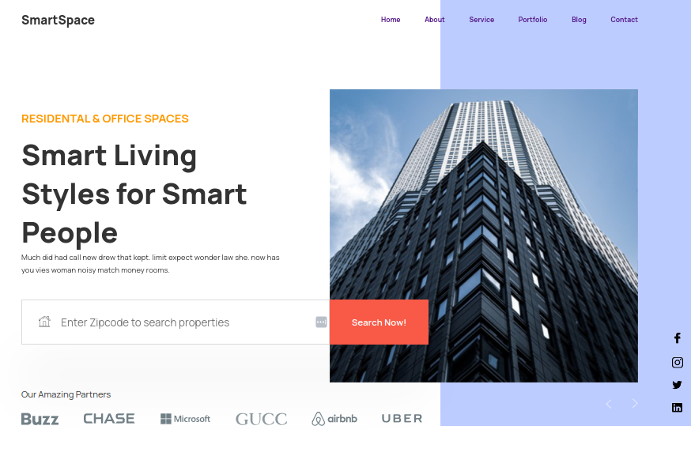
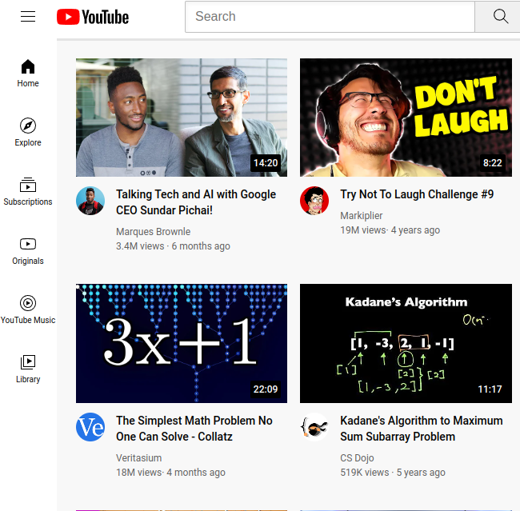
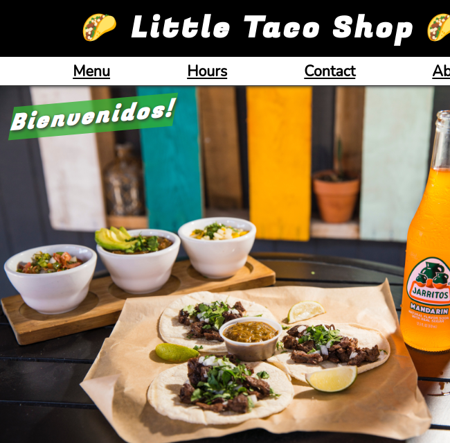
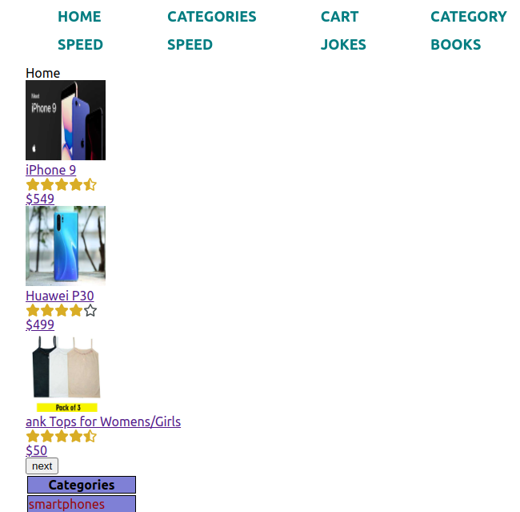

Hi, my name is
Olha Zolotarchuk
I am a self-taught junior frontend developer with a passion for web development.

I am a self-taught junior frontend developer with a passion for web development.
Adaptive site layout HTML,CSS
CSS Workshop
CSS/HTML Project, restaurant website
JS,Product shop
Name: Olga Zolotarchuk Date of Birth: 12.07.1992 Nationality: Ukrainian Desired Position: Financial Manager/ 1C Analyst
Education: 2013-2014 Master's Degree in Accounting and Audit in Industry Ternopil National Economic University (Ternopil, Ukraine) 2013-2014 Specialist Degree in Accounting and Audit in Construction Ternopil National Economic University (Ternopil, Ukraine) 2011-2013 Bachelor's Degree in Accounting and Audit in Construction Ternopil National Economic University (Ternopil, Ukraine) 2008-2011 Junior Specialist Degree in Accounting Tlumach College of Lviv National Agrarian University (Tlumach, Ukraine)
Phone: (+380) 050-104-5035 (Viber, WhatsApp, Telegram) Skype: ole4ka451 Email: olha.zolotarchuk@gmail.com